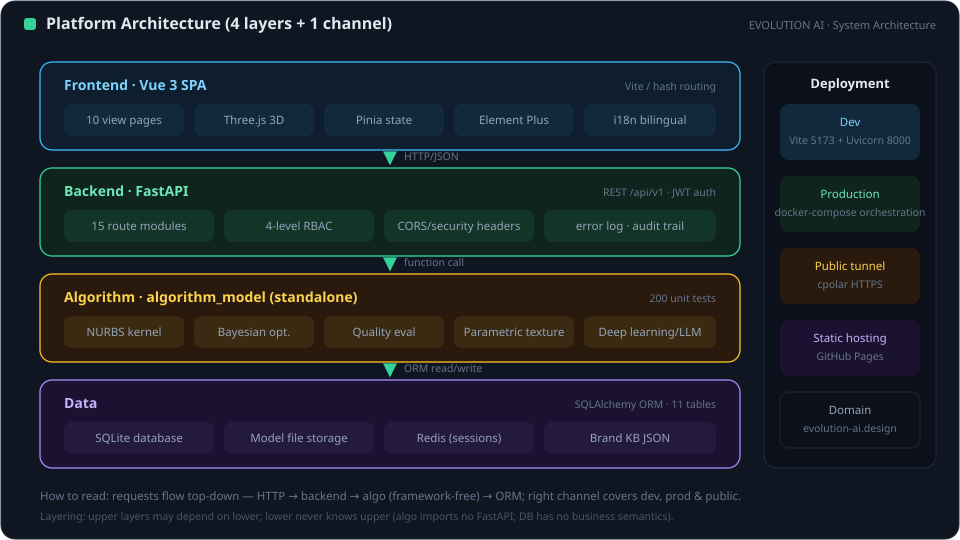
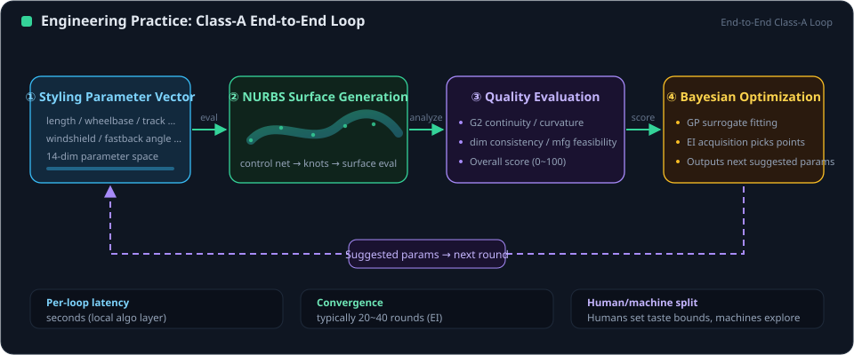
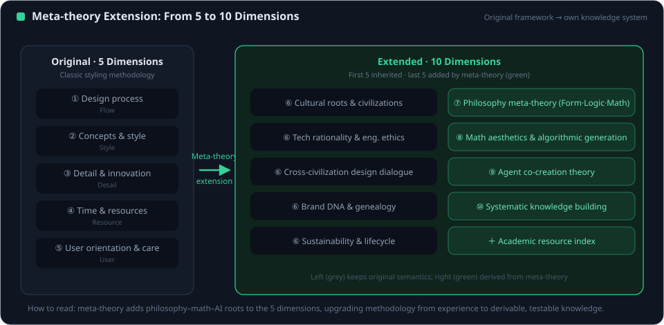
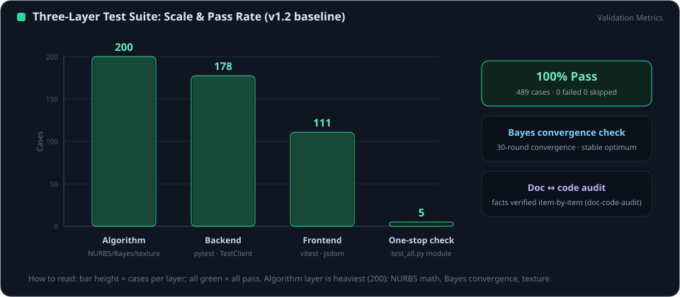

The Quantum Swordsman is not a brand symbol but the personification of EVOLUTION AI's entire engineering philosophy—understanding the creative process through a quantum worldview, and treating every surface with the craftsmanship of an Eastern swordsman. It is every developer's AI-first collaborator on the platform.
Until observed, a design problem exists across all candidate solutions simultaneously. The Agent generates dozens of variants in parallel within the parameter space, rather than converging prematurely.
Design intent and geometry are deeply entangled—when brand DNA or constraints change, the entangled surfaces, character lines and metrics evolve together; no separation between design and engineering.
Quality scores, reflection-line checks and brand-similarity computations are acts of observation: each collapses possibility into a more certain solution, and observation itself shapes the outcome.
Barriers that classical processes must climb step by step—from a sketch directly to a Class-A surface—are crossed by tunneling with AI: physical constraints are never violated, only the path is reinvented.
Before forging the blade, forge the mind. Every project begins with physical hard points and brand DNA—skeleton first, variation after.
Ten years to sharpen one blade is the attitude toward Class-A surfaces: G2 continuity, 0.1 mm tolerance, 75% quad ratio, polished through millions of Cython operations.
A swordsman strikes within a fraction of a millimeter. At design reviews the Agent supports decisions with quantified data, identifying the real problem directly and without flattery.
The highest realm is unity of human and blade: human taste and judgment fused with the Agent's compute and knowledge into one creative subject. AI is not a tool in hand, but a collaborator at your side.
AI-first means the Agent is the first consulted, the first to give structured judgment and the first to verify—never an automation button at the end of the process.
Holds independent context and responsibility for judgment; proactively surfaces risks and counterexamples instead of awaiting word-by-word instructions.
Creative choices and aesthetic value judgments remain with humans; the Agent ensures those judgments rest on complete information and full verification.
Every recommendation carries evidence (file:line, metrics, test results); every decision leaves a trace.
Distills skills and lessons from every collaboration and evolves with the repository.
| Identifier | evolution-ai-design (project-level subagent) |
| Definition file | .trae/agents/evolution-ai-design.md |
| Persona | Quantum Swordsman |
| Tools | Read / File system / Terminal / Web search / Preview |
| Invocation | Auto-delegated by the built-in Agent, or explicit @evolution-ai-design |
Every dimension of the parameter space maps to real physical constraints—aerodynamics, ergonomics and manufacturing.
Parameters are intent; geometry is expression. A change in one moves all.
Quantified quality metrics serve as observation, collapsing uncertainty and steering iteration.
G2 continuity, tolerance and highlights are treated with a swordsman's discipline—no compromise on quality.
Humans hold direction and decisions; AI holds exploration and verification—mutual augmentation, not replacement.

All Agent work runs on this six-layer architecture. Understanding the layers is the premise of precise collaboration—you can assign data-layer-only changes or full-stack integration exactly.
| Layer | Composition |
|---|---|
| Frontend | Vue 3 + Vite · 12 views · bilingual i18n · route guards |
| Gateway | nginx · gzip · WebSocket upgrade · TLS termination |
| Backend | FastAPI · ~118 endpoints · JWT auth · slowapi rate limits |
| Data | PostgreSQL 16 / SQLite · Redis 7 · SQLAlchemy + Alembic |
| Algorithm | Cython NURBS · quality scoring · Bayesian optimization · CLIP |
| AI Services | 6 LLM provider proxies · Ollama local design knowledge |
Six capabilities cover the full styling-development chain; each is backed by code modules, data assets and a test baseline.
NURBS generation · Cython 100–400× speedup · G0/G1/G2 continuity
5 premium brands, 19 models · 14 params + 8 metrics each · semantic search
Style Transfer · Sketch to 3D · Dream Design
Reflection / curvature / tolerance · topology checks · auto reports
Three-block knowledge · 21-anchor consistency · Docker / local mode
Real PyTorch backend · Bayesian hyperparameter tuning · state persistence

Read the real code and docs, reproduce the problem, collect runtime evidence; never act on assumptions. For design, observe brand DNA, hard points and reference models.
Define the parameter-space boundaries explicitly: physical constraints, brand language, performance and security. Constraints focus rather than limit creativity.
Generate candidate solutions in parallel within the feasible space—parametric bodies, AI variants and parameter configurations, preserving superposition.
Observe each solution through quantified metrics; the fittest advance, feedback feeds the next round, iterating until acceptance criteria are met.
The Agent's expertise comes from structured knowledge assets, not improvisation. All assets are versioned with the repository, shared by the team and continuously accumulated.
| Rolls-Royce (4) | Phantom · Ghost · Wraith · Cullinan |
| Bentley (4) | Continental GT · GTC · Flying Spur · Bentayga |
| Bugatti (3) | Chiron · Veyron · Divo |
| Porsche (5) | 911 · Taycan · Panamera · Cayenne · Macan |
| Ferrari (3) | SF90 · Roma · F8 Tributo |
| Granularity | 14 design parameters + 8 quantitative metrics + brand-language metadata per model |
Full-stack development—features, fixes, refactoring, integration and deployment.
Project intro deck generation: bilingual, complete images, collision-check gate.
One-click documentation-vs-source audit: stale data, dead links, navigation.
Detached local services (cpolar + FastAPI + Vite) start and restart.
| Guest | Browse and try demos without login; friendly guidance instead of forced redirect |
| User | Project work and model generation; only own resources can be modified |
| Admin | Troubleshooting; login records and audit logs |
| Super Admin | Account repair; backend errors and bugs; cannot deactivate or demote self |

| GitHub Pages | Static portal at evolution-ai.design; latest build plus full dist/docs sync; bilingual docs and figures |
| Docker Stack | nginx + backend + PostgreSQL 16 + Redis 7; persistent volumes; health checks; no public PG/Redis |
| TLS Layer | 443 with certbot; HSTS max-age=31536000; TLS terminated at nginx |
| LLM Standalone | docker-compose.llm.yml for design-knowledge inference; Docker/local auto-fallback |

| Backend tests | 204 pytest cases all green—APIs, auth, rate limits, data and algorithms |
| Frontend tests | 123 vitest cases including route-guard permission matrix |
| Browser E2E | Guest / user / admin states validated in a real browser |
| Geometric checks | G0/G1/G2 four-view continuity · reflection lines · tolerance |
| Delivery gate | Tests only increase; Compose changes must pass docker compose config |
Effective collaboration rests on a clear contract. These clauses define how the Quantum Swordsman and human developers work together.
The Quantum Swordsman grows with the platform: first consolidate reusable processes, then deepen intelligence, finally move toward autonomous evolution.
PostgreSQL + Alembic migrations, Docker productionization, four-tier permissions, security hardening and the skill system
Expanding the brand knowledge base; quality models with real engineering cases; multimodal LLM design knowledge (image + text + parameters)
From passive response to proactive advice: identifying design risks, regression impact and preparing options before action
Within human-defined value boundaries, the Agent completes explore-verify-deliver loops autonomously; humans retain final sovereignty over direction and taste